Editeur dans le moteur permettant de créer et modifier des sous-titres pour les scènes de jeu.
UnityTooling
Outil · Fonctionnalité
Éditeur de sous-titres
Un éditeur intégré au moteur pour créer, organiser et prévisualiser
les sous-titres des scènes de jeu.
UnityTooling
01 — Contexte et problème
La modification des sous-titres directement dans les fichiers de scène
rendait les itérations longues et difficiles à relire. L’objectif était
de permettre une édition rapide depuis l’éditeur Unity.
02 — Objectifs de conception
Créer et modifier des lignes de dialogue sans quitter Unity.
Associer un texte à un timing dans une séquence du jeu et gérer les temps d'apparition.
Facilite la traduction en plusieurs langues.
Vue principale de l’outil dans l’éditeur Unity.
03 — Fonctionnement
L'EditorWindow récupère la liste de tous les ScriptableObject de sous-titres présents dans le projet et les sépare en deux listes:
Les sous-titres utilisés une partie normale.
Les sous-titres utilisés dans le tutoriel.
L'EditorWindow affiche ensuite les données de chaque SO (ScriptableObject) une par une et séparées par une ligne. Les données affichées sont
modifiable et mises à jour en temps réel dans le SO correspondant. On peut également ajouter de nouveaux sous-titres et les supprimer.
On peut accéder à la listes de sous-titres qu'on veut en cliquant sur le bouton en haut à gauche.
La langue des sous-titres peut être changée en cliquant sur le bouton en haut à droite.
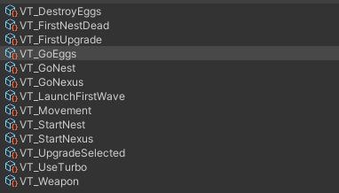
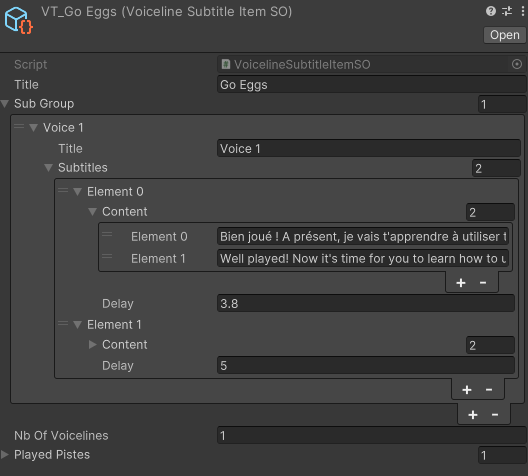
Liste des ScriptableObject de sous-titres et l'inspector d'un SO.
04 — Résultat et limites
L’outil facilite les modifications rapides et la relecture du contenu.
Une meilleure représentation des séquences et des traductions pourrait rendre l'outil plus lisible et plus pratique.
05 — Prochaines étapes
Ajouter une prévisualisation des différentes résolutions.
Étudier l’import et l’export de fichiers de traduction.
02Archivé
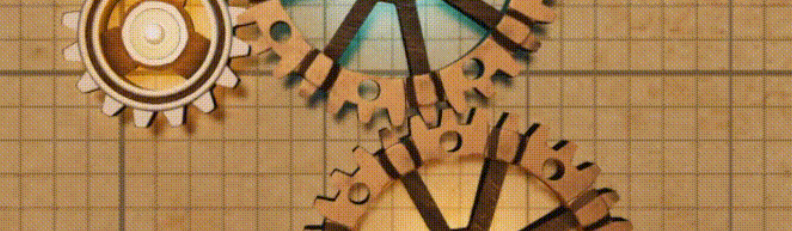
Système · Mécanique
Snapping dynamique
Système permettant de faire coller dynamiquement deux objets dans l'espace 3D.
UnityMaths
Outil · Fonctionnalité
Snapping dynamique
Système permettant de faire coller dynamiquement deux objets dans l'espace 3D.
UnityMaths
01 — Contexte et problème
Le gameplay de Gears consiste à placer des rouages dans un espace 3D pour faire tourner un mécanisme.
Le joueur doit pouvoir placer correctement les rouages sans lui demander de précision extrême.
02 — Objectifs de conception
Rendre le placement des rouages intuitif et précis.
Ne pas exiger une précision extrême du joueur.
Assurer une bonne performance du système dans les scènes complexes.
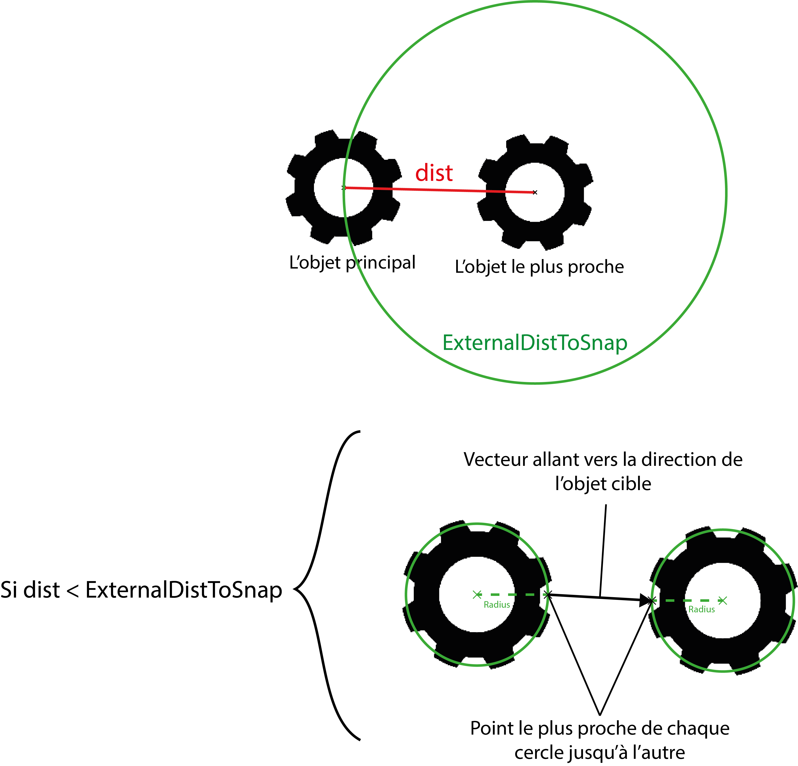
Schéma illustrant le fonctionnement de la détection de l'objet à snapper.
03 — Fonctionnement
Dès qu'un joueur prend un objet, le système calcul la distance entre l'objet et les autres objets autour de celui-ci.
L'objet le plus proche est enregistré et on vérifie si la distance entre les deux est inférieur à une valeur seuil.
Si c'est le cas, l'objet est snapé à l'autre objet et on calcule ensuite la distance entre le curseur et l'objet snapé
pour déterminer le moment où le joueur souhaite détacher l'objet snapé.
Le système est optimisé pour ne pas calculer la distance avec tous les objets de la scène
mais seulement avec ceux qui sont dans un rayon défini autour de l'objet.
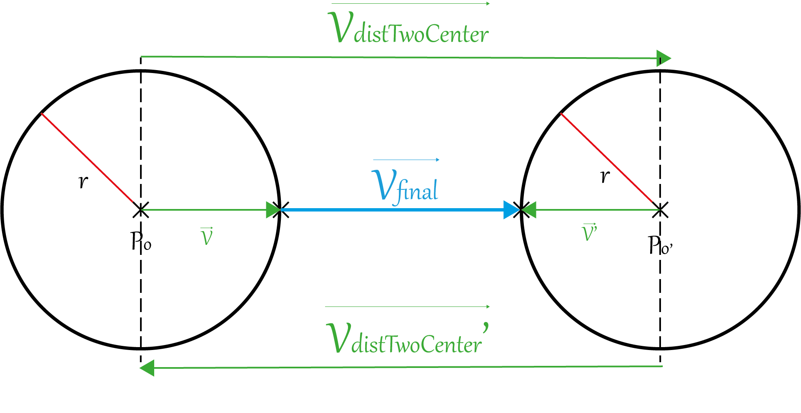
Schéma illustrant les vecteurs et les distances calculées entre les deux objets.
Le système applique plusieurs calculs de distance pour créer la velocité de snap VFinal et la distance de détachement.
Tout est détaillé dans le Game Design Document.
04 — Résultat et limites
Le système permet de placer correctement les rouages sans demander de précision comme voulu.
Le problème principal est que des valeurs de seuil doivent être définis pour chaque cas de snap (ex: petit rouage contre grand rouage,
petit rouage contre petit rouage, etc...) notamment pour la valeur de distance de détachement.
Il est donc nécessaire de faire des tests pour chaque cas de snap et d'ajuster les valeurs de seuil en conséquence.
03Archivé
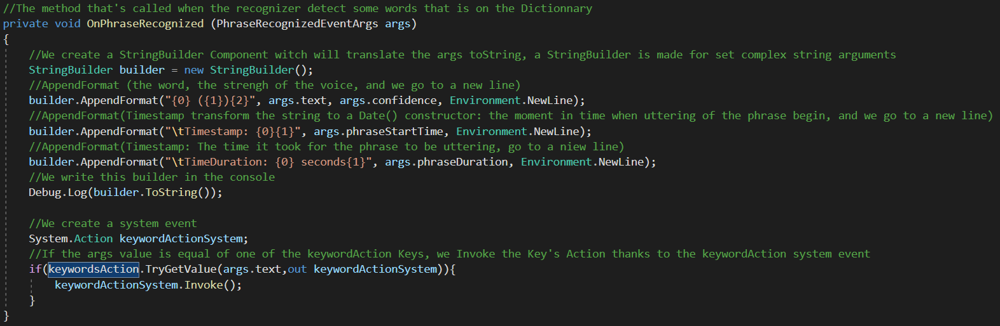
Système · Mécanique
Reconnaissance vocale
Mise en place d'un système de reconnaissance vocale pour diriger le personnage.
UnityLibrary
Système · Mécanique
Reconnaissance vocale
Un système de reconnaissance vocale pour diriger le personnage dans le jeu.
UnityLibrary
01 — Contexte et problème
Le projet est issue d'une semaine thématique dont le thème était "controlleur alternatif".
L'idée est de créer un jeu où le joueur est contrôlé par un controlleur atypique. Mon choix s'est porté
sur la voix. Le joueur doit pouvoir se déplacer dans l'environnement en donnant des ordres vocaux au personnage.
02 — Objectifs de conception
Créer le système de reconnaissance vocale.
Ajouter des mots clés pour les commandes vocales.
Associer les mécaniques de dépacements aux commandes vocales.
03 — Fonctionnement
Grâce à la librairie Unity.Windows.Speech, j'initie le système de reconnaissance vocale en associant des mots clés à des actions
grâce à un dictionnaire. Le système écoute en permanence les commandes vocales et déclenche les actions correspondantes que je défini
au lancement du jeu.
Au cours de la partie, le système enregistre le nombre de commandes vocales reçues. Et tous les X secondes, il regarde les commandes
reçues et déclenche l'action de la commande la plus entendue.
Cette feature est faite pour qu'un groupe de joueur puisse être aux commandes du personnage et que le personnage se déplace
en fonction de la majorité des commandes reçues.
Screenshot de la fonction de tri des commandes vocales reçues et de l'action déclenchée.
04Archivé
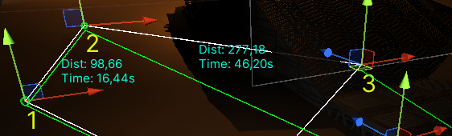
Outil · Editor
Gestionnaire de points
Inspecteur personnalisé pour gérer les points d'intérêt d'un parcours dans l'éditeur.
ToolingCustomInspector
Outil · Editor
Gestionnaire de points
Inspecteur personnalisé pour gérer les points d'intérêt d'un parcours dans l'éditeur.
UnityTooling
01 — Contexte et problème
Dans le projet Caverners, il y a une mission d'éscorte d'un véhicule. Le véhicule doit suivre un parcours
défini par des points d'intérêt. Chaque point d'intérêt est un objet vide à placer sur la scène. Le problème est que
le placement peut être fastidieux et difficile à visualiser dans la scène, en sachant qu'il faut calculer la distance
entre chaque point pour que le véhicule puisse faire le parcours en un temps voulu avec une vitesse définie.
02 — Objectifs de conception
Créer un inspecteur personnalisé pour gérer les points d'intérêt du parcours.
Afficher la distance et le temps de parcours entre chaque point d'intérêt.
Visualiser le parcours et manipuler les points dans la scène.
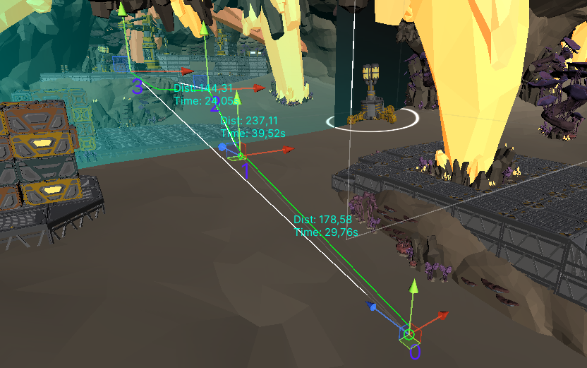
Screenshot de la scène avec le parcours et les points d'intérêt.
03 — Fonctionnement
L'inspector permet d'ajouter ou supprimer des points de la liste, de les réorganiser et de changer la vitesse de déplacement
de l'agent à escorter. Il calcule la distance entre chaque point et le temps de parcours total en fonction de la vitesse définie.
Le parcours est affiché dans la sceneview avec des lignes reliant les points et des labels indiquant l'index de chaque point
et la distance entre eux. Le développeur peut aussi déplacer les points directement dans la sceneview grâce à des handles.
La ligne verte représente le parcours grâce au NavMesh.
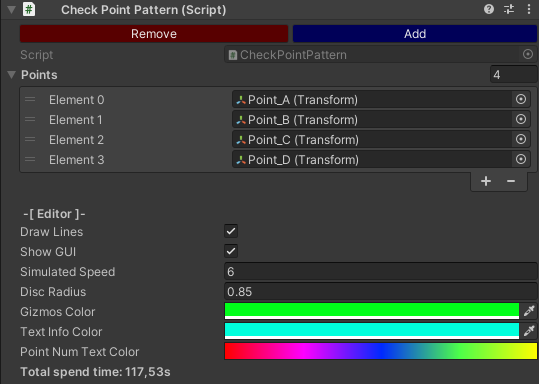
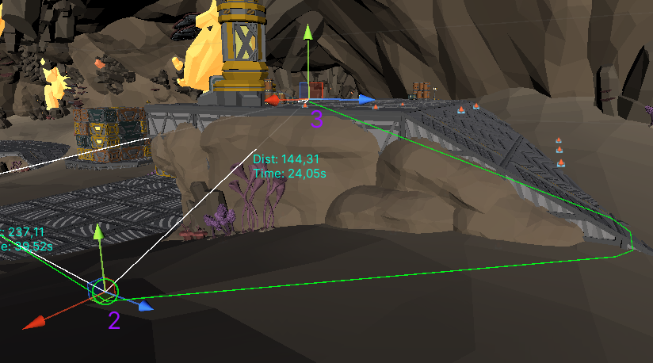
Screenshots de l'inspector et de la sceneview avec le parcours et les points d'intérêt.
04 — Résultat et limites
L'outil reste simple mais permet de gérer les points d'intérêt du parcours plus facilement.
Le visuel reste tout de même difficile à lire et il est compliqué de placer au sol correctement les points.
05Archivé
Système · Fonctionnalité
Intégration du tchat Twitch
Intégration du tchat Twitch dans un canvas de l'environnement pour une scène de ma chaîne.
UnityLibraryNetworking
Système · Fonctionnalité
Intégration du tchat Twitch
Intégration du tchat Twitch dans un canvas de l'environnement pour une scène de ma chaîne.
UnityLibraryNetworking
01 — Contexte et problème
Je voulais intégrer le tchat Twitch dans un environnement 3D pour une scène de ma chaîne.
L'objectif était de permettre d'avoir une scène sur Unity que je peux compléter avec des assets que
je peux créer moi-même et d'avoir des intéractions avec le tchat Twitch en temps réel.
02 — Objectifs de conception
Créer la scène sur Unity.
Intégrer le tchat Twitch dans le canvas de l'environnement.
Permettre d'avoir des intéractions avec le tchat Twitch en temps réel.
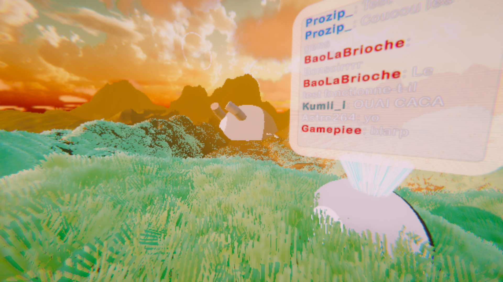
Screenshot de la scène.
03 — Fonctionnement
J'ai utilisé un système trouvé sur GitHub pour récupérer les messages du tchat Twitch grâce à l'API Twitch.
J'ai ensuite filtré les messages pour ne récupérer que les pseudos avec leur couleur et le message.
Puis j'ai affiché les messages dans un canvas en créant une copie du prefab de message pour chaque nouveau message reçu.
J'ai également ajouté un système de suppression des messages après un certain temps pour éviter d'avoir trop de messages affichés en même temps.
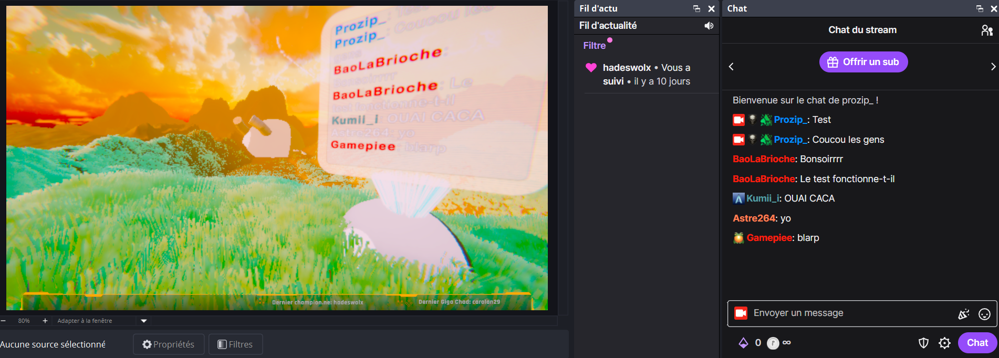
Screenshot de la scène OBS avec le tchat Twitch à droite.
04 — Résultat et limites
Les messages s'affichent bien mais le système ne supporte pas les emotes. J'ai pensé à utiliser l'API Twitch pour
récupérer et télécharger l'emote Twitch lors de sa première apparition dans le tchat et l'enregistrer dans un dossier
mais je n'ai pas eu le temps de le faire. Le système est fonctionnel mais il reste à améliorer l'affichage des messages et à ajouter la gestion des emotes.